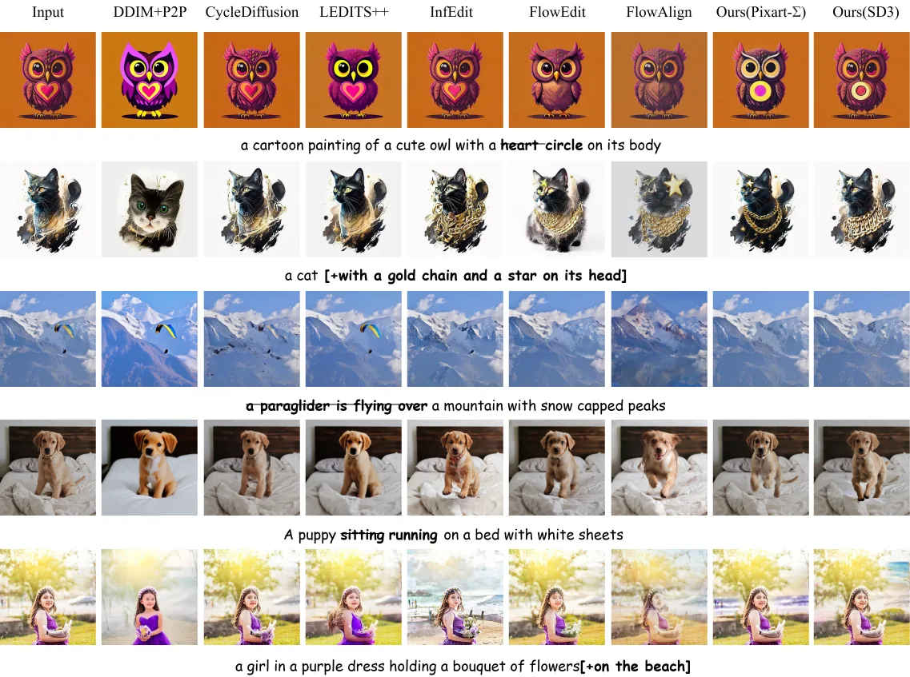

ECCV 2026
Multi-History-Step SDE Inversion for Image Editing with Superior Regional Awareness
A training-free image editing framework with efficient SDE inversion and inversion-time semantic region control.
NLPR, Institute of Automation, Chinese Academy of Sciences · University of Chinese Academy of Sciences
Abstract
In recent years, diffusion stochastic differential equation (SDE) inversion and inversion-free methods have become prevalent for training-free image editing, as they can achieve faithful reconstruction without tuning. However, existing approaches remain inefficient, exhibit limited plasticity, and struggle to accurately preserve unedited regions. To address these issues, we propose MIEdit, a training-free editing framework based on SDE inversion. MIEdit introduces a predictor-corrector multi-history-step scheme to achieve superior editing quality with fewer steps. We further mitigate heterogeneity and conflict between the multi-conditioned noise residuals and gradient terms during sampling, improving stability and editing plasticity under large edits. MIEdit also includes Inversion-Time Automatic Semantic Angle Masking (IASM); it leverages classifier-free guidance to automatically generate semantic angle masks during inversion and applies them throughout the sampling process for regional constraints, without extra user inputs. We additionally construct EditEval++ for comprehensive evaluation; experiments show that MIEdit outperforms state-of-the-art techniques.
Introduction
Recently, pretrained text-to-image diffusion models have driven numerous training-free image editing methods. Many image editing methods rely on deterministic ordinary differential equation process inversion, such as DDIM inversion and flow inversion. These approaches map an input image back to latent variables or a noise trajectory of the diffusion process, enabling the synthesis of an edited image under a new prompt. However, ODE inversion typically involves implicit equations over its own variables, and explicit approximations may introduce severe reconstruction errors, particularly when conditioning is incorporated.
We generalize DDPM inversion as a form of stochastic differential equation inversion. It leverages latents precomputed from the forward process to compute the noise terms required for reconstruction, thereby correcting the generation process. Nevertheless, existing SDE inversion methods mainly focus on low-order SDE samplers, leaving room for improvement in both convergence speed and generation quality. Moreover, both ODE- and SDE-inversion-based editing methods remain weak in preserving non-edited regions, making it difficult to precisely handle editing tasks with different modification extents.
To address these issues, we propose MIEdit, an image editing method based on arbitrary multi-history-step diffusion SDE inversion that integrates a predictor-corrector mechanism for higher-quality image generation. To improve non-edited region control, we further propose Inversion-Time Automatic Semantic Angle Masking, which generates masks during inversion and applies them throughout the sampling process for regional constraints without extra inputs.
Qualitative Results
